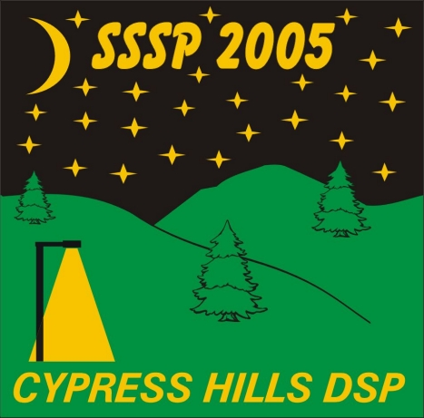

|

(Centre Block - 30km South of Maple Creek on Hwy 21)
August 4th to August 7th, 2005
An event organized by the Saskatoon and Regina Centres of the Royal Astronomical Society of Canada
Address of this webpage: http://www.usask.ca/psychology/sarty/rasc/sssp2005.html
Ivan Semeniuk
Producer and Astronomy Columnist
Discovery Channel's Daily Planet
UPDATE AS OF JULY 10, 2005
Registration - Early Registration ends July 15!!
Rates are unchanged from 2004.
Early Registration
Late and At-the-Door
Registration
Singles - $17
Singles - $27
Couples - $28
Couples - $38
Families - $34
Families - $44
William and Marianne Hydomako
SSSP Registrars
135 Manning
Cres.
Saskatoon, SK Canada S7L 6J3
E-mail: wm.hydomako@sasktel.net
Phone:
306-384-4781

Star Party Events
THURSDAY AUGUST 4
Accommodation and
Camping
For hotel room, cabin or condo accommodation information, contact
the Resort at 306-662-4477. Make sure you tell them you are
with the Star Party and that you want a room in our reserved block.
Additional information about the Resort is available at their
website: http://www.cypressresortinn.com/.
This year our room block contains a limited number of Resort
accommodations on THURSDAY night, as well as Friday and Saturday
nights. **UPDATE** As of July 10, one standard condo was available in the Resort.
There may be cancellations, so if you want to book accommodations within the
Resort, please call ahead.
There are also two nearby B&Bs: As usual, there is lots of room to camp at the Meadows
Campground, where all the observing will occur. You do not have to
reserve a Meadows campsite, but you *must* register when you
enter the park and pay the appropriate camping fees at the
Camping Office. Note that the Meadows is a slightly more rustic
campsite, with water taps, outhouses, fire-pits, picnic tables and
both treed and open camping sites. There are no showers at the
Meadows, but the showers are available at the Rainbow campground, a
10-minute walk away. Most of us have camped at the Meadows for the
last 7 years and have had a blast there. Those with motor homes will
find that the Meadows now has electrical hook-ups! There is an extra
charge for the use of an electrified site. Please contact the
Camping Office to confirm prices. If you want to camp away from the Star Party in the 'regular'
campgrounds, we recommend strongly that you book a spot ahead in
Rainbow, Terrace or other campgrounds. To pre-book camping (if not
in the Meadows) call the Reserve-a-Site number: 306-662-5484. For those of you who are sleeping elsewhere in the Park but want
to use an electrical hook-up for your equipment while observing, you
will have to pay for that electrified site. However, we may be able
to make arrangements so that several people can work off of one
power tap using a power bar and share the costs. Watch this website
for updates. To confirm prices and to obtain further information about the
park, visit their website at: http://interactive.usask.ca/ski/tourism/sask_parks/cypress.html. Park Entry
Fees
Since the SSSP is held in a provincial park, entry fees apply,
and you will have to pay these at the gate: $7/day, $17/3-day
pass or $25/week pass. SSSP Pins
The pin design for this year's star party is shown above. SSSP 2005 pins are available by pre-order and at-the-door for $5.
Pins from previous years are still available. T-Shirts and Golf
Shirts
The shirt logo for this year's star party is shown above. This year we have available for order T-shirts, Golf-shirts, and
new this year, button-down-the-front short sleeve shirts. The
background colour of the shirts will be forest green. Shirts should
be ordered when you pre-register for the star party. Shirts can also
be ordered at SSSP, but they will be shipped to you after the part
is over, as another print run may be necessary. Prices are as
follows: Pre-order before July 15th - T-shirts are $17.00,
Golf shirts are $30.00, Buttoned shirt sleeve shirts are
$35.00; Prices at SSSP - T-shirts will be $25.00, Golf
shirts will be $40.00, Buttoned short sleeve shirts will be
$45.00. About the gorgeous Cypress
Hills Park
If you have not been to the Cypress Hills Inter-provincial Park,
you are missing something! This is a beautiful park, nested in
Lodgepole pines on a butte that reaches 1460 meters above sea level,
and is the highest point in Canada between the Rockies and Labrador.
(Because of the altitude - bring warm clothes for night time!) Its
unique position gives it an unusual weather advantage. Historical
weather maps published by Jay Anderson in the RASC Observer's
Handbook indicate that the area around Cypress Hills has the best
chance for clear skies (less than 30 percent mean nighttime cloud
cover) in July and August compared to any other site in Canada. Also,
no mosquitos! The park is very modern and well equipped for families of tired
astronomers. The park features a lake, hiking trails, paddle boats,
mini golf, regular golf, a general store, a full resort, two
restaurants, an ice-cream and snack shop, a souvenir shop, moose and
other varmints (no snakes or big cats), ball diamonds, picnic
grounds, tennis courts, an outdoor heated pool, hot tub, a museum
and of course, the SSSP! More on the park is found at: http://interactive.usask.ca/ski/tourism/sask_parks/cypress.html.
You are Here!
The location of the center of the Meadows campground is:
End
Come early and stay late if you choose. Events take place in the
Resort's Wapiti Room (WR), the Meadows Campground (MC) or the Park
Amphitheatre (PA). Every day ends with viewing in the MC.
FRIDAY AUGUST 5
SATURDAY AUGUST 6
SUNDAY AUGUST 7
Note that the
Weiner Roast and the Banquet are extra-cost events. The Weiner Roast
is usually $1 for each 'dog and $1 for each soft
drink; the marshmallows are free! The menu and costs for the Banquet
have not been set, but they should be similar to 2004, which were:
Adults $20.00, Children 4-11 yr $10.00. Watch this
space.

In the Cypress Hills
Area
SSSP 2006
Other things to see while you are in the area:
We'll be back on August 24 - 27, 2006.